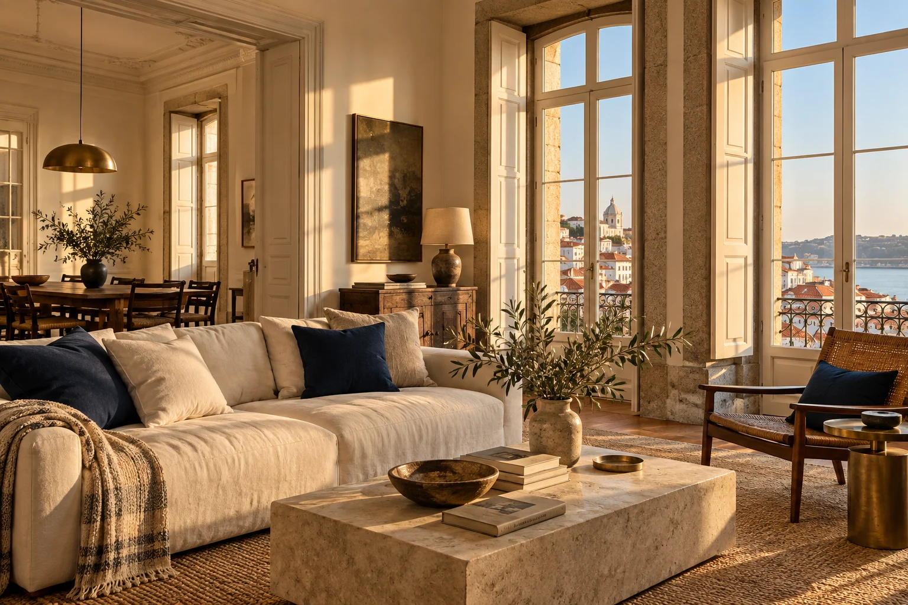

Scheduled property visits
Visual checks of agreed accessible areas for obvious leaks, damp, unusual smells and door or window concerns. Frequency is agreed for your home.
Plan your visitsA plan for the periods when you are not in Portugal: agreed property visits, observations and practical coordination, with clear updates when something needs attention.
A standalone service for property owners. No relocation package is required.

Thoughtful care while you are away.
Visual checks of agreed accessible areas for obvious leaks, damp, unusual smells and door or window concerns. Frequency is agreed for your home.
Plan your visitsAgree key custody and authorised attendance. Coordinate cleaners or tradespeople when approved work is needed.
Arrange home servicesCoordinate agreed cleaning, household supplies and delivery arrangements ahead of an owner visit.
Arrival supportRecord observations and appropriate photos, identify concerns and agree what happens next. Visits are visual checks, not specialist surveys, guarantees against damage or continuous monitoring.
Supplier costs, additional attendance, emergency call-outs and extended supervision are addressed separately in your proposal. Contact hours and local response arrangements are confirmed before care starts.
Tell us where it is, how you use it and what you would like handled. We’ll discuss coverage and prepare a scope and fee for your review.